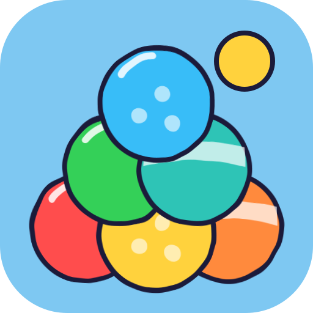

Get the ballpit.party app
Install it once, then play right from your desktop or home screen.
Installed. Open ballpit.party from your apps and play.
Windows
Mac
Linux
Android
iPhone and iPad: not yet
Already installed? Open ballpit.party from your apps.